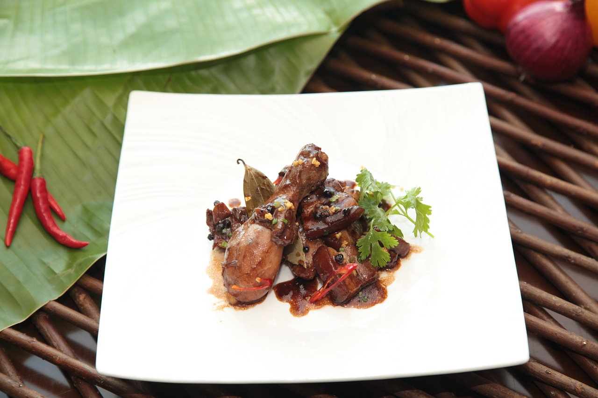

Adobo is a beloved Filipino stew known for its salty, sour, and sometimes sweet flavor. It typically features chicken, pork, or seafood braised in a savory sauce made with vinegar, soy sauce, garlic, and peppercorns. Unlike its Latin American cousins, Filipino adobo doesn't usually include chilies, making it a more tangy than spicy dish. This flavorful dish is a staple in Filipino households and is often served with rice.